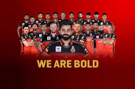
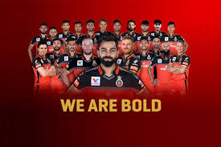
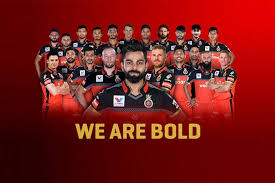

ROYAL CHALLENGERS BANGALORE
🏆 ಈ ಸಲ ಕಪ್ ನಮ್ದೇ 💪#PlayBold
 

🏆 ಈ ಸಲ ಕಪ್ ನಮ್ದೇ 💪#PlayBold

The Royal Challengers Bangalore (often abbreviated as RCB) are a franchise cricket team based in Bangalore, Karnataka, that plays in the Indian Premier League (IPL). It was founded in 2008 by United Spirits and named after the company's liquor brand Royal Challenge. Since its inception, the team has played its home matches at the M. Chinnaswamy Stadium. The Royal Challengers have never won the IPL but finished runners-up on three occasions between 2009 and 2016. Their lack of success over the years despite the presence of various notable players has earned them the tag of "underachievers"The team holds the records of both the highest and the lowest totals in the IPL – 263/5 and 49 respectively.
Franchise history
In September 2007, the Board of Control for Cricket in India (BCCI) announced the establishment of the Indian Premier League, a Twenty20 competition to be started in 2008.[4] The teams for the competition, representing 8 different cities of India, including Bangalore, were put up on auction in Mumbai on 20 February 2008. The Bangalore franchise was purchased by Vijay Mallya, who paid US$111.6 million for it. This was the second highest bid for a team, next only to Reliance Industries' bid of US$111.9 million for the Mumbai Indians. The brand value of Royal Challengers Bangalore was estimated to be ₹595 crore (US$83 million) in 2019, according to a survey conducted by Duff & Phelps.[5] Diageo India CEO Anand Kripalu will take over the RCB chairmanship from Sanjeev Churiwala beginning 1 October
Logo
The logo initially consisted the RC emblem in yellow on a circular red base with the black text "Royal Challengers Bangalore" in standard format surrounding circular logo. The RC crown emblem with the roaring lion placed on the top of the logo was derived from the original Royal Challenge logo. No significant changes took place in the design of the logo except for the replacement of colour yellow with gold from 2009. This logo also had a dotted white circle around the RC emblem. The team also uses an alternate logo for the Game for Green matches where the green plants surround the logo and the text Game for Green is placed below the logo. The logo was redesigned in 2016 with the inclusion of black as a secondary color. The lion emblem in the crest was enlarged and the shield was omitted in the new design. In 2020, a new logo was unveiled featuring a bigger lion and the crown returning from the previous logo. The RC emblem was omitted for this crest.
Jersey
The jersey colors of the team in 2008 were red and golden yellow, the same as the unofficial Kannada flag, with player names printed in white and numbers printed in black in the rear. Yellow was eliminated in future seasons and was replaced with gold. Starting from 2010, blue was introduced on the apparel as a tertiary colour. The jersey design saw tweaks every season, major being the one for 2014 where blue dominated over gold. From 2014, the player names and numbers were printed in gold. As of 2015, more yellowish shade of gold is being used on the jerseys. The blue was completely eliminated in 2016 and was replaced by black as the third colour in the two versions of the jersey; one for home matches and the other for away ones. From 2020, black was replaced with a shade between dark blue and black. Reebok manufactured kits for the team from 2008 to 2014 and Adidas supplied the kits in 2015. Zeven manufactures the kits for the team from 2016.